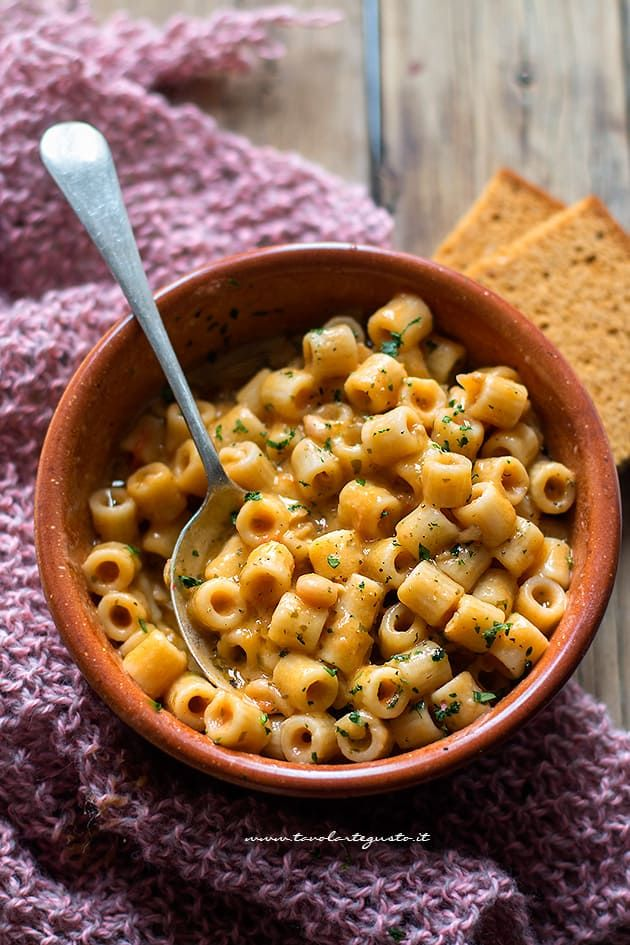

Pasta e Fagioli

An Italian Classic
This is one of the baseline for some people when they start cooking
You can do this dish in many different ways, as you like
This is the "Standard" Version
Ingredients
- 1 Kg Fresh borlotti beans
- 100 g 00 flour
- 100 g Re-milled durum wheat semolina and 30g sliced lard
- 2 pcs eggs
- 1 pc Celery stalk
- 1 small carrot
- 1 small onion
- Garlic
- Rosemary
- Tomato concentrate
- Extra virgin olive oil
- Salt pepper
Steps
- Start by shelling the fresh beans by collecting them in a bowl. Cut celery, carrot and onion into tiny cubes
- Sauté the vegetables in a saucepan with 4 tablespoons of oil and 2 bay leaves for 2-3 '. Then add a spoonful of tomato paste
- Cook for 1-2 ', then add 2 liters of cold water and the beans. When boiling add a sprig of rosemary, cover with the lid and cook for about 30 '. Towards the end, add salt and pepper
- Mix the semolina and flour with the eggs to obtain a smooth dough. Cover it and let it rest in the refrigerator for 1 hourz
- Roll out the dough into a thin sheet on a floured work surface and cut it into lozenges with a serrated wheel
- Drain half of the cooked beans. Remove the bay leaves and rosemary and blend the soup into cream
- Add the whole beans in the cream and bring it back to the heat. When boiling add the pasta, cook for 3 '
- Very finely chop half a clove of garlic, the leaves of 2 sprigs of rosemary and the lard. Brown the mixture obtained in a hot pan without other fats until the lard has melted
- Add the browned meat to the pasta and beans, stir, turn off the heat and let it cool before serving, with a sprinkling of pepper